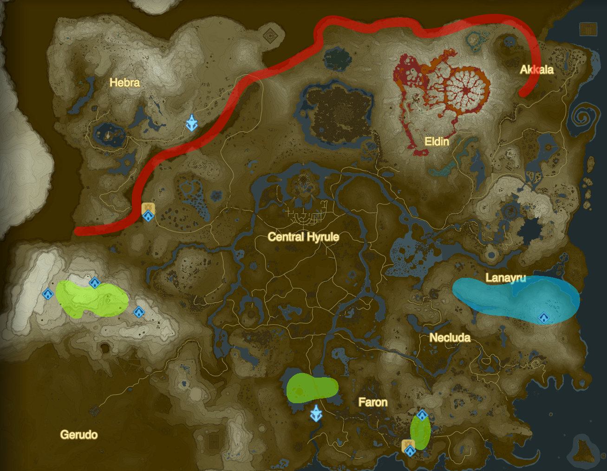

Quick Guide
- Warp to Shae Loya Shrine in Tabantha.
- Sit at fire at Tabantha Bridge Stable until night.
- Run along cliffs of Tanagar Canyon to see Dinraal.
- Warp to Jitan Sa'mi Shrine in Lanayru
- Glide NE toward Wintre Island to see Naydra.
- Warp to Shoda Sah Shrine in Faron.
- Swim up waterfall to see Farosh.
- Repeat.
Longer Guide
Dinraal
- Warp to Shae Loya Shrine (by Tabantha Bridge, below the NE Hebra region)
- Go north to Tabantha Bridge Stable and sit at cook fire until night
- 9PM - Run north along cliffs of Tanagar Canyon, look for Dinraal in the canyon
- 10PM - Attack Dinraal, collect item (likely down in the canyon), move on to Naydra...
Naydra
- Warp to Jitan Sa'mi Shrine (in the Spring of Wisdom on top of Mount Lanayru in the eastern Lanayru region)
- 10:30PM - Exit cave to the left, glide NE towards Wintre Island, look below while gliding to see Naydra
- 11:30PM - Attack Naydra, collect item (likely in the water, or on Wintre Island), move on to Farosh...
Farosh
- Warp to Shoda Sah Shrine (above Lake Floria in the SE Faron region)
- 12AM - Swim up waterfall directly in front of shrine. At the top, Farosh will spawn.
- 12:30AM - Attack Farosh, collect item (likely on a cliff below or in the lake), go back to Dinraal and repeat cycle...
Spawn Points / Travel Paths
- Dinraal travels from Eldin mountain, through the Deplian Badlands in the north, all the way along to the west end of the Tanagar Canyon below the NW Hebra region.
- Naydra can only be found around Mount Lanayru in the east Lanayru region.
-
Farosh can be found in three places:
- around Lake Floria in the SE Faron region,
- around Lake Hylia in the South,
- or in the Gerudo Highlands above the SW Gerudo region and below the NW Hebra region.

- The times listed in the Longer Guide above are the approximate times that they appear based on the steps of that particular cycle, but they're not the the only times they appear. They spawn any time between night (9pm) and morning (7am) at the specific spawn areas. Although, they only spawn once per day, which resets at midnight. Even if they spawn in the distance without being noticed, they won't respawn again until midnight passes.
- For clarification, Naydra requires the corresponding Spring quest to be completed in order to appear. The other two will appear regardless of their corresponding Spring quests' status.
- If having trouble with glitches: a) save and reload the game, b) close the software and reopen, c) shut the system down and turn it back on (not sleep mode).
Useful Equipment
- To protect from the two-level cold at Mount Lanayru: wear one or two cold resistant armor piece(s), use a level one or two cold resistant meal/elixir, carry a fire weapon (one level protection).
- The waterfall at Lake Floria requires the Zora Armor to be able to swim up.
- They create an updraft, so attack in the air to get the archery slowdown effect, which makes it easier to aim.
- To hit the right place easier, use a bow with zoom capability (e.g. Golden Bow). Even easier is to use a SSB Zelda amiibo to get the Twilight Bow, which fires light arrows that shoot a straight path.
- Wearing the upgraded element-proof armor set helps to avoid the fire/ice/electric spheres, which can knock out Link and obscure the flight path of the item. Wearing the stealth armor, however, causes them not to appear for some people, although this effect was not personally experienced.
- Farm one of them by igniting some wood (with flint or a fire weapon) and sitting until night (9PM) or morning (5AM) of the next day. Items don't disappear when sitting by the fire, which makes it easy to farm items by repeatedly attacking then sitting by the fire until the next day, letting the items build up before retrieving them. Items do disappear, however, when leaving the area/teleporting, so be sure to collect all the items before travelling elsewhere.
How to Use Items
Items can be used for some quests, used to upgrade armor, sold for rupees at any traveller or store, exchanged for Mon from Kilton's Monster Shop, or used while cooking meals (not elixirs) to boost the time of the special effect. For example, cooking a Zapshroom with an Apple will create a meal that grants electricity resistance for 3:00. Adding one Scale (+1:30) will increase that time to 4:30 (although adding a second won't increase the time by the same amount). Using a Horn results in the maximum effect time of 30:00.
Three armor sets require these items for upgrades: Barbarian (1 Horn of each), Fierce (1 Scale/Claw/Fang/Horn of each), and Wild (2 Scale/Claw/Fang/Horn of each). The Champion's Tunic requires 2 Horn from each. The Snow Boots require 2 Scale from Naydra.
The table lists the rupee value when sold, the Mon value when exchanged, the bonus time to the special effect when cooked, and the amount of each item (Dinraal / Naydra / Farosh) needed for all armor upgrades:
| Item |
Rupees |
Mon |
Cook |
Armor |
| Scale |
150 |
60 |
+1:30 |
3 / 5 / 3 |
| Claw |
180 |
80 |
+3:30 |
3 / 3 / 3 |
| Fang |
250 |
110 |
+10:30 |
3 / 3 / 3 |
| Horn |
300 |
150 |
30:00 |
6 / 6 / 6 |
Alternate Strategies
- For Dinraal, glide NE from Hebra Tower to meet Dinraal in Tabantha Canyon. There is also a bed directly below the tower in Pondo's Lodge (Snowling hut) to pass time and heal.
- For Naydra, wait at the Lanayru Road - East Gate for Naydra to pass above the gate. To find the item easier, wait to attack until Naydra passes the gate so the item ends up in the water where it's easier to see instead of the cliff.
- For Farosh, travel to the Shai Utoh Shrine beside the Lakeside Stable (has a cook fire) where Farosh will pass above the bridge at Lake Floria. Or glide from Lake Tower to Lake Hylia where Farosh will pass above the Bridge of Hylia. Or use any of the three shrines in the Gerudo Highlands where Farosh appears. Ultimately, the best spot is at the top of the waterfall above the Shoda Sah Shrine on the north edge of Riola Spring, which is Farosh's spawn point. Up here, it's easy to farm Farosh using a self-made campfire (under an overhang in the rocks to protect from rain).
About
This version was last updated on May 7, 2017 using game version 1.1.2. Information was gathered from personal gameplay experience, GameFAQs boards, reddit, and the object map organized by MrCheeze on GitHub (for the paths of where to find them). The guide was purposefully vague about some things in order to spoil as little as possible. To contact author, email 3x3is9@gmail.com, either for clarification, inaccuracies, tips, or any other relevant information.